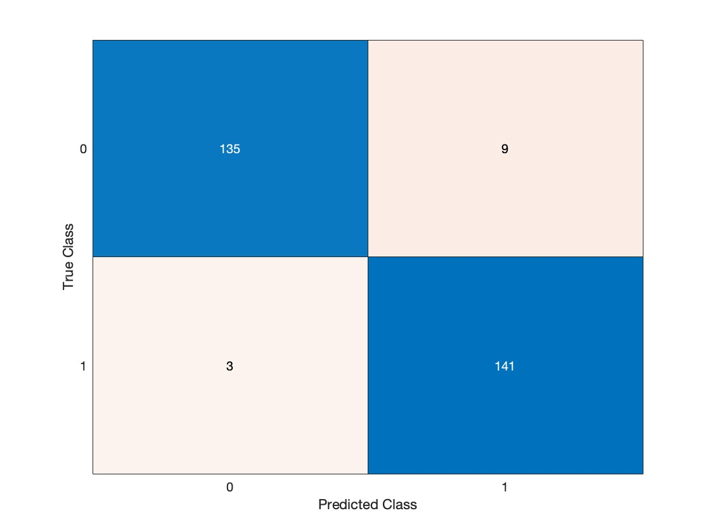

Machine Learning for
Financial Data
Extracts from the report
Comparison of Naive Bayes and Decision Trees on Personal Loan data. I used two machine learning models to predict if a would accept personal loan or not. I achieved high accuracy in both models and critically evaluated the results and the implementations of the models.
Results of the models
Carried feature selection for decision trees, but it did not improve the model, but it proved the hypothesis of splitting the income feature. It was proved that the income feature was the most important for deciding the root.
Decision Trees Confusion Matrix
As we compare the final model performances, we can see that decision trees have predicted the classes better, which was stated by our hypothesis. One of the reasons for that may be that decision trees rely on splitting the data, rather than calculating the probability.
Naïve Bayes Confusion Matrix
In both cases of the models, while performing the cross validation with optimized training models, the errors were higher than with not optimized models. It means that the data is not overfitted in the training model and may perform more accurate predictions.